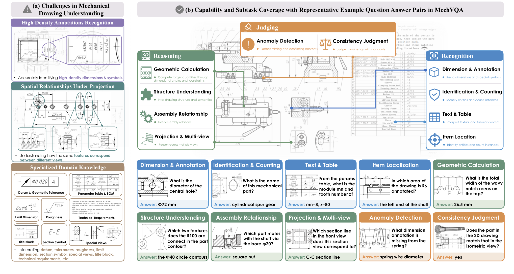
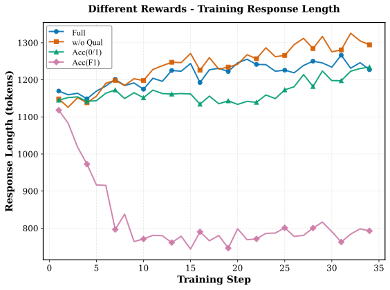

MechVQA: Benchmarking and Enhancing Multimodal LLMs on Comprehensive Mechanical Drawing Understanding
论文笔记: MechVQA: Benchmarking and Enhancing Multimodal LLMs on Comprehensive Mechanical Drawing Understanding
MechVQA 的价值，是把机械图纸理解拆成可诊断的识别、推理和判断任务，再用领域后训练展示哪些短板能够改善。 作者构造机械图纸问答数据，并将 Qwen3-VL-4B 训练成 MechVL；核心投入在数据质检、奖励设计与薄弱任务重采样，没有增加显式三维重建或几何约束求解器。
我最关心两个结果：领域训练的收益确实明显，但投影与多视图依旧落后；训练和评测又大量依赖语言模型判分。因此，这篇论文支持“小模型通过针对性训练成为更好的机械图纸问答器”，尚不足以证明它已掌握可独立校验的制图规则，或能完成工程设计交付。
1. 背景信息
- 作者与机构：Qian Kou、Xiaofeng Shi 等，来自北京智源人工智能研究院、中科院信息工程研究所、北京工业大学。
- 发表与版本：ICML 2026 / PMLR 306。本文阅读的是 2026-07-07 更新的 arXiv v2 全文与附录 A–C，并查看原图。
- 复现入口：官方仓库、项目页、公开 SFT 数据卡。本次另核对了发布说明、评分说明和 SFT 配置；没有训练模型、运行基准或逐题复核数据标签。
2. 关键问题：读出了剖面字母，是否真的找对了剖切位置？
Golden Case：Figure 1 的投影与多视图例题。 给定一张零件图和一个剖视图，问题是“这个剖视图对应主视图中的哪条剖切线？”，参考答案是 C–C。这要求模型把局部剖面形状、孔位和主视图中的剖切位置关联起来；只识别字母或看见相似轮廓，并不充分。

来源：Figure 1，Kou 等，CC BY 4.0。重点看左侧的跨视图对应，以及右下方 Projection & Multi-view 的 C–C 例题：文字、几何和投影关系需要一起解释。
一种可能的失败是：模型读对了几个尺寸和字母，却把另一个位置的剖切轮廓认作目标剖面。这是为解释难点给出的潜在失败方式，论文没有公布该例的模型错误轨迹。 主实验提供的是任务层面的证据：基座模型在文本与表格上已有较高分，多视图任务却明显偏弱，具体数字见第 5 节。
与自然图像 VQA 相比，图纸多了一层受制图惯例约束的表示：同一对象在不同视图中形状不同，相同图形符号在不同上下文中含义也不同。邻近工作如 DesignQA、TriView2CAD 分别覆盖工程文档问答、三视图推理等侧面；MechVQA 试图在真实零件与装配图上统一测量以下能力。§1–3；Appendix B.3
| 能力 | 子任务 | 要区分的能力边界 |
|---|---|---|
| Recognition／识别 | 实体识别与计数 IC；尺寸与标注 DA；文本与表格 TT；对象定位 IL | 能否读出信息，并把标注定位到正确对象 |
| Reasoning／推理 | 结构理解 SU；几何计算 GC；装配关系 AR；投影与多视图 PM | 能否结合尺寸链、剖面和多个视图推断未直接给出的信息 |
| Judging／判断 | 异常检测 AD；一致性判断 CJ | 能否发现缺失、冲突，以及制图规范或视图一致性问题 |
每题只有一个子任务标签。“综合”指覆盖面，不能理解为每题都同时验收全部工程能力。一个值得保留的细节是：附录 Figure 13 的一种尺寸计算模板只允许加减法，明确排除三角函数和勾股定理；不能把这个模板的限制扩大成全部 GC 题的定义，也不能仅凭“几何计算”名称推断其数学深度。
3. 关键方法：先保证题目有据可答，再训练模型把依据用对
3.1 数据构造：模型共识之前，需要专家纠正图纸事实
流程从公开教材、专业手册和设计平台的图纸开始。专家先去掉低质量、不完整或扫描不清的图；OCR 提取文本，强多模态模型提取零件名、视图类别、视图数量、技术要求等元数据，再由受过机械专业训练的研究生核验。§3.1–3.3
随后有三条出题路线：自由生成；没有内生答案的模板生成；由已验证元数据或专家可控编辑提供答案的模板生成。前两条都要跨模型检题、修题，多模型作答后做语义多数投票，缺少明确共识的样本丢弃。第三条还包含二维与轴测视图配对，以及专家用 CAD 增删标注、修改尺寸和符号构造的异常题。这些 CAD 编辑用于局部判断题，不能描述成整个数据集都由程序合成并自动提供几何真值。 最后，专家对分层抽样的保留样本审计；论文没有声称逐条 QA 全部经专家确认。
为什么专家不能省？Table 5 中，视图数量、剖视图、技术要求字段的修正率分别为 41.6%、37.8%、43.7%。这些是被审计组的元数据字段修正率，不是最终 QA 错误率。它们说明：如果最初把剖面类型、热处理要求读错，后续语言流畅的问答也可能只是围绕错误前提展开。Appendix B.2，Table 5
检题提示词中最有用的原则是：先检查问题预设的视图、符号和尺寸是否存在，再决定接受、修订或删除。例如，把基准字母当成剖切标识，会使问题本身失效。这比只让另一个模型回答一次更接近实际质检，但模型间的一致仍不保证几何正确。Figure 14–15
3.2 沿 C–C 案例走完训练与推理
对上面的例题，MechVL 的输入是图纸图像与问题。它经 Qwen3-VL 的视觉编码器和投影层进入语言模型，再生成解释与最终答案；推理时没有额外 CAD 工具或外部检索。
- SFT 学习领域映射与回答结构。 用数据集中的解释和答案作为监督，更新语言模型全部参数，冻结视觉编码器与多模态投影层。对该类问题，目标是把剖切位置与剖面对应关系写进回答，最终返回 C–C。这里描述的是方法应用于该例的过程，不是作者展示的逐 token 运行记录。
- RL 比较同题的多个候选回答。 每题采样 10 个回答，用正确性、格式和解释质量合成奖励。在这个例子里，选对 C–C、输出可解析的答案、解释前后一致，会分别影响不同奖励项；论文没有给出该样本的实际奖励值。
- 第二轮增加薄弱子任务的训练占比。 第一轮在全训练集上做 DAPO，第二轮对表现较差的子任务提高采样比例，优化目标和奖励不变。作者称它为 two-stage self-play；按论文具体定义，它是模型表现驱动的再采样流程，没有描述独立出题者与解题者互相博弈。
SFT 使用标准交叉熵，新增设计主要在数据与 RL 奖励。正文 §4.1 明确冻结视觉模块；附录 C.1 的“所有模型参数”表述较宽泛，当前公开 SFT 配置也设置了视觉编码器和投影层冻结，因而应以“语言模块全参训练”理解，不能误写成全模型端到端更新。
3.3 奖励究竟在教什么？
最终配置为：
其中，$r_{\mathrm{acc}}\in[0,1]$ 由 LLM 判断最终答案与参考答案的语义一致性；$r_{\mathrm{fmt}}\in\{0,1\}$ 检查是否具有规范的 <think>...</think> 与 <answer>...</answer> 结构；$r_{\mathrm{qual}}$ 则取逻辑、专业性、简洁性三个评分的均值。正确性奖励也依赖 LLM，不能把它当成确定性的几何验证器。 引言对质量维度的概述出现了 Normativity，这里采用 §4.2 / Eq. 7 的明确公式定义。Eq. 6–7；Table 7
为什么不用字符串相等？C–C 的等价写法不应被直接判错，开放解释也很难逐字匹配。为什么还要质量奖励？只奖励最终答案和格式，未必抑制冗长或自相矛盾的解释。但质量评分改善表达，不等于证明解释忠实反映模型内部的视觉推理。
DAPO 沿用组内相对优势：
同题中比平均更好的回答被强化，同一个回答的所有 token 共用这个优势。它在 token 级聚合策略损失，以非对称裁剪限制更新幅度，并对过长回答做奖励塑形；动态采样保留同时含正确与错误回答的组，丢弃全对或全错的组。直觉是优先利用“模型已经有机会做对、但还不稳定”的题。这不同于第二轮的子任务重采样：前者筛同题回答组，后者调整训练题目分布。 Eq. 2–5
复现时需要保留的配置包括：SFT 3 个 epoch、学习率 $10^{-5}$、全局 batch 64、序列上限 4096；RL 学习率 $10^{-6}$、全局 batch 128，DAPO 不加显式 KL 惩罚，裁剪幅度为下侧 0.20、上侧 0.28。图像最大总像素数 262,144，SFT 还限制长边为 1024；实验使用 8 张 80GB H800。论文未充分说明 targeted 阶段各任务采样权重与等算力对照，不能只凭这些公共超参保证原样复现。Appendix C，Table 6
4. 数据与评分：要分清论文集合、公开包和分数含义
论文共 3,281 张图、20,778 对 QA，按图纸组以 8:1:1 划分训练、验证、测试，同一图纸衍生的所有题进入同一划分；再融合 CLIP 图像与平均文本表征进行聚类分配，兼顾来源、子任务与难度分布。此举减少库内同图及相似变体泄漏，不能排除公开教材进入基础模型预训练。Appendix B.6 的 t-SNE 仅支持划分分布较接近，不能作为零污染证明。§3.4；B.6
截至 2026-10-26，公开发布材料与论文统计应分开记录： 官方仓库提供 1,185 道评测 QA、562 张图；SFT 数据卡则列出训练 12,749 条、验证 766 条，共 3,371 张独立图像。数据卡报告构建时删除了 2,555 条与公开评测集图像哈希重合的记录，以及 465 条训练侧跨划分同图记录；最终包无精确图像哈希重合，但明确不保证没有视觉近重复。这是当前发布包的清理记录，不能据此断言论文实验泄漏，也不能反推论文实验已完全去污。本次只核对了文档，没有独立运行其审计。官方发布说明、数据卡
评测先抽取最终答案，然后让 GPT-OSS-120B、DeepSeek-V3.2、Kimi-k2 三个裁判独立判断与参考答案是否语义等价，温度为 0.1，以多数票得到题目分数。裁判只看问题、参考答案和模型答案，不看原图或被评模型身份；目标模型无回答计零，调用失败的裁判被排除，全部失败计零。这是答案核验，不是让裁判重新解图。Appendix C.4，Figure 18
这里的测试裁判要求 0/1；它与 RL 使用的连续正确性奖励不是同一个口径。Total 是逐题聚合，Avg. 是十个子任务的无权平均，三项能力分则各自在所属子任务上平均。 数据分布不均衡时，三者不能互换。参考答案若错，或答案文字正确却没有真正利用图像，当前自动裁判本身无法独立排除这些问题。Table 3、官方分数说明
5. 关键结果：RL 补上部分推理短板，但最弱能力没有消失
5.1 领域后训练有效，比较对象的训练条件也不同
所有模型都在同一 MechVQA 协议下评测，不使用外部工具或检索。通用基线没有接受额外领域适配，MechVL 则训练于该基准的训练集；因此这是领域适配相对通用迁移的比较，不是相同数据和预算下的架构对决。下表从 Table 2 选择总体表现与诊断性子任务，分数均以百分数计。§5.1–5.2，Table 2
| 模型 | Total | 文本表格 TT | 对象定位 IL | 装配关系 AR | 投影多视图 PM |
|---|---|---|---|---|---|
| Qwen3-VL-4B-Instruct | 60.23 | 88.64 | 33.09 | 22.00 | 20.00 |
| MechVL-4B-SFT | 76.36 | 97.73 | 61.15 | 40.00 | 44.00 |
| MechVL-4B-RL | 84.85 | 97.73 | 82.01 | 84.00 | 64.00 |
| GLM-4.6V | 78.91 | 97.73 | 63.31 | 60.00 | 62.00 |
| Gemini-3-Pro-Preview | 77.28 | 97.73 | 64.03 | 46.00 | 58.00 |
| GPT-5 | 75.44 | 93.18 | 62.59 | 60.00 | 60.00 |
RL 模型比最强受测闭源基线高 7.57 个百分点，比最强受测开源基线高 5.94 个百分点。这里应采用 Table 2 的精确差值，不能直接沿用引言中较含混的“6%”。
更有解释力的是提升分布：相对 SFT，AR 增加 44 点，PM 增加 20 点，TT 不变。结合 Figure 3 中中等题 70%→79%、困难题 53%→75%、简单题 92%→94%，收益主要集中于更难的推断，而不只是文本读取。Figure 3
但 PM 仍是最终模型得分最低的子任务，且只领先 GLM-4.6V 2 点。MechVL 也并非所有任务第一：几何计算为 76.83，低于 GLM 的 82.93；一致性判断为 78.67，低于 Gemini 的 82.67。回到 C–C 案例，模型在这类对应问题上更会答了，数据仍不足以支持“已经解决投影一致性”。
5.2 两阶段训练的收益明确，收益归因仍需更强控制
Table 3(A) 区分了全量 RL 与 targeted RL，能力分是子任务均值：
| 训练阶段 | 识别 | 推理 | 判断 | Total | 十任务均值 Avg. |
|---|---|---|---|---|---|
| SFT | 83.11 | 54.40 | 76.91 | 76.36 | 70.39 |
| + 全量 DAPO | 86.26 | 70.75 | 81.62 | 81.95 | 79.12 |
| + 薄弱任务重采样 DAPO | 89.70 | 77.04 | 82.81 | 84.85 | 83.26 |
全量 RL 带来 5.59 点 Total 增益，第二阶段再增 2.90 点；推理能力均值也持续上升。这支持重采样流程的实用性。但缺少“继续相同步数的全量 RL”对照，无法把第二阶段收益完全归因于薄弱任务选择，而非额外训练。 Table 3(A)
算法对照中，全量 DAPO 的 Total 为 81.95，GRPO 为 80.47，GSPO 为 78.77。作者比较了同一初始化和共享训练设置下的算法配置；KL、裁剪、损失聚合和筛样方式仍随算法不同，故这是整套配置的比较，不能单独证明动态采样或非对称裁剪哪项起决定作用。论文也未报告这些差值的多种子方差或置信区间。Table 3(B)、Table 6
5.3 奖励会改变回答长度，但长度曲线不是推理机制证明
在 targeted 阶段，二元正确性奖励、token F1、去掉质量项、完整奖励的 Total 分别为 82.24、80.33、83.44、84.85。完整配置表现最好，说明在本设置下语义反馈和质量项有用；但不能据此说每一项对每类能力都必需：去掉质量项时，推理均值为 77.23，还略高于完整配置的 77.04。Table 3(C)

来源：Figure 4，Kou 等，CC BY 4.0。紫线的 F1 奖励使回答迅速缩短；橙线去掉质量项后偏长；蓝线完整奖励保持中等长度。需要把这张图与 Table 3(C) 的最终分数一起看。
一种合理解释是，表面词语重合奖励鼓励短答，缺少简洁性约束则容易变啰嗦。但实验同时改变了奖励函数与回答长度，没有固定长度的对照。它支持“奖励塑造输出行为”，不能证明更长的解释导致更好的推理，也不能证明蓝线对应的解释更忠实。
6. Insights：下一步应该验证什么？
第一，最有价值的迁移单元可能是“可核验的领域语义”，而非 DAPO 名称。 元数据需要大量专家修正，最终模型的收益又集中在定位、装配与视图推断，这共同指向一个具体方向：把“标注属于哪个几何对象、剖面对应哪个位置”作为监督对象。若迁移到其他工程图纸，优先建立少量高可信的对象—标注—视图关系，再比较纯 QA 监督与关系监督；不能直接假设同一奖励配方在新图纸上仍有效。
第二，要验证跨视图规则是否学会，应让答案随着几何变化而变化。 PM 仍弱，而评测裁判看不到图，说明总分无法定位模型是否真正利用投影关系。可以基于 C–C 案例构造最小反事实：保持问题和大部分标注不变，只改变剖切位置或局部孔形，并由 CAD 几何确认新答案；再做遮挡关键局部与保留局部两组对照。若模型仍机械返回同一字母，便能把语言先验与视觉约束使用区分开。这是建议实验，不是论文已有结果。
第三，模型共识让数据可规模化，也可能系统性排掉最值得测的难题。 MechVQA 丢弃没有语义多数的候选 QA，同时用 LLM 判定最终答案。分歧有时来自坏题，有时恰恰来自强模型共有能力的边界。更有信息量的补充集，是从“分歧但专家可明确判定”的样本中建立独立挑战集，并按新教材、零件家族或图纸来源留出测试。当前没有人类专家上界、正式标注一致性或充分跨来源外推证据，尚不能量化模型距离工程专家多远。§3.3；Appendix A
就复现决策而言，我会先使用公开权重和评测脚本，在一个来源独立、答案经过专家核验的 PM/AR 小集合上比较基座、SFT、RL；分别报告任务均值与逐题总分，再决定是否投入完整训练。论文的边界是高质量公开二维图纸问答，不包括企业历史扫描件上的稳定性、完整三维 CAD 重建或 STEP/IGES 文件交付。Appendix A
7. 连接与发现
- MOC-Multimodal-LLM-Reasoning — Topic：为多模态选择性优化增加一个机械图纸场景；选择发生在题目与回答组层面，正确性反馈依赖语义裁判。
- Engineering-Drawing-Understanding-Cross-Discipline-Survey — 从符号、标注抽取推进到图纸问答、跨视图对应与规范判断的案例，可补充工程图纸理解谱系。
- PLE-Physical-Engineerings-Last-Exam-工程交付与硬约束评测 — MechVQA 评估图纸问答，PLE 评估文件包与工程约束验收；两者连接了工程认知与交付，但分数没有可直接互换的含义。